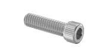
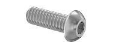
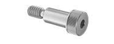
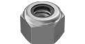
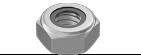
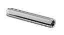
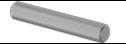
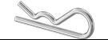
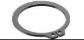
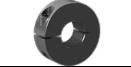

1. Bu lông, ốc vít (fasteners)
Bu lông, ốc vít: là cách gắn kết các bộ phận phổ biến nhất. Ở FTC Việt Nam loại 4mm(M4) là phổ biến nhất.
2. CÁC LOẠI BU LÔNG (BOLTS)
| Loại bu lông | Mô tả | Hình ảnh |
|---|---|---|
| Bu lông đầu trụ lục giác chìm (Socket / Cap Head Bolt) |
Loại bu lông phổ biến nhất, rất chắc chắn. Đầu lục giác khó bị tòe khi siết, thường dùng cho khung và các liên kết chính của robot. |  |
| Bu lông đầu bằng / đầu chìm (Flat Head / Countersunk Bolt) |
Dùng khi cần đầu bu lông nằm ngang bằng bề mặt. Cần khoét vát lỗ trước khi lắp. Bu lông hệ inch thường dùng góc 82°, hệ mét dùng 90°. |

|
| Bu lông đầu tròn thấp (Button Head Bolt) |
Có đầu tròn, dùng ở nơi bu lông đầu trụ quá lớn hoặc khi không muốn đầu bu lông bị vướng vào chi tiết khác. |  |
| Bu lông đầu thấp (Low Profile Bolt) |
Đầu bu lông thấp hơn đầu trụ, phù hợp với các vị trí có không gian hẹp. |

|
| Bu lông vai (Shoulder Bolt) |
Có phần trơn chính xác, dùng để lắp vòng bi hoặc bạc, và thường đóng vai trò như một trục. |  |
| Vít chốt / vít không đầu (Set Screw / Grub Screw) |
Dùng để giữ chi tiết cố định trên trục. Nên hạn chế sử dụng; nếu dùng thì chỉ nên để giữ vị trí, không dùng để truyền mô-men xoắn. |

|
3. ĐAI ỐC (NUTS)
Đai ốc :là chi tiết có ren, được vặn vào bu lông để liên kết các bộ phận lại với nhau. Chúng là giải pháp thay thế cho việc vặn bu lông trực tiếp vào lỗ đã tạo ren trên chi tiết.
| Loại | Mô tả | Hình ảnh |
|---|---|---|
| Đai ốc tự hãm (Lock Nut) | Loại đai ốc thông dụng nhất. Có vòng nylon bên trong giúp ngăn bu lông bị tự lỏng ra khi robot hoạt động. |  |
| Đai ốc tự hãm mỏng (Thin Lock Nut) | Dùng khi đai ốc tự hãm tiêu chuẩn quá dày hoặc quá lớn, không đủ không gian lắp. |  |
| Đai ốc thường (Regular Nut) | Đai ốc thông thường, thường dùng khi tạo "jam nut" (siết hai đai ốc ngược chiều nhau) trên thanh ren. |

|
| Đai ốc chữ T (Tee Nut) | Loại đai ốc ép vào gỗ, đôi khi được dùng trong cản (bumper) của robot. | |
| Đai ốc nhiệt (Heat Set Inserts) | Dùng cho chi tiết in 3D hoặc nhựa. Lỗ được thiết kế sẵn, sau đó dùng mỏ hàn ép insert bằng đồng vào nhựa. |

|
4. CỐ ĐỊNH BU LÔNG (BOLT RETENTION)
Cố định bu lông là một yếu tố vô cùng quan trọng đối với robot trong các giải đấu FTC. Để tránh rơi vào tình huống robot bị bung rời ngay giữa trận đấu, ta tốt nhất nên áp dụng một phương pháp chống tự lỏng cho toàn bộ bu lông trên robot. Hai phương pháp được sử dụng phổ biến nhất trong FTC là keo khóa ren và đai ốc khóa nylon. Ngoài ra, vẫn còn một số phương pháp khác có thể hữu ích trong những tình huống nhất định.
Keo khóa ren (Loctite)
Keo khóa ren (Loctite) là loại keo dùng cho ren, giúp ngăn bu lông bị lỏng do rung động. Loại keo khóa ren xanh phù hợp với các bu lông cỡ số 8 trở xuống, trong khi loại keo khóa ren đỏ phù hợp với các bu lông cỡ số 10 trở lên và có thể tháo ra mà không cần gia nhiệt. Keo khóa ren đỏ vẫn có thể được sử dụng cho các bu lông nhỏ hơn, tuy nhiên cần đặc biệt cẩn thận để tránh tuột ren hoặc gãy bu lông. Những bu lông sử dụng keo khóa ren có độ khóa cao hơn có thể được tháo ra bằng cách gia nhiệt bằng súng nhiệt. Ngoài ra còn có keo giữ chặt, được sử dụng để giữ vòng bi trong lỗ hoặc cố định các chi tiết trên trục.

Khi sử dụng keo khóa ren, cần chú ý kỹ đến vật liệu. Nhựa polycarbonate có thể bị nứt nếu tiếp xúc với các loại keo khóa ren xanh hoặc đỏ thông dụng. Cần lưu ý rằng phần lõi bánh xe trong bộ truyền động tiêu chuẩn của bộ linh kiện thi đấu thường được làm từ polycarbonate. Keo khóa ren cũng sẽ làm hỏng phần nylon của đai ốc khóa nylon, vì vậy không được sử dụng hai phương pháp này cùng lúc. Trong trường hợp cần sử dụng keo với nhựa, keo khóa ren an toàn với nhựa có thể dùng cho polycarbonate và các loại nhựa khác.
Đai ốc khóa nylon (Nylon Lock Nuts)
Đai ốc khóa nylon (Nylon Lock Nuts) là loại đai ốc có vòng nylon bên trong, tạo ma sát với ren bu lông để ngăn bu lông tự lỏng do rung động. Mặc dù có nhiều ý kiến khác nhau về việc tái sử dụng loại đai ốc này, nhưng trong FTC, việc tái sử dụng thường vẫn được chấp nhận. Tuy nhiên, không sử dụng đai ốc khóa nylon cùng với keo khóa ren.

Ống chèn ren có khả năng tự khóa (Locking Heli-coils/Screw Thread Insert)
Có thể được sử dụng để giữ chặt bu lông hoặc sửa chữa các ren bị hỏng. Lỗ sẽ được ta-rô bằng mũi ta-rô chuyên dụng, sau đó ống chèn được lắp vào lỗ bằng dụng cụ lắp chuyên biệt. Do hình dạng đặc biệt của ren, đa số các ống chèn này có khả năng tự khóa, rất phù hợp để tạo ren chắc chắn trong các vật liệu mềm như nhôm hoặc nhựa.

Đai ốc biến dạng ren (Distorted Thread Nuts)
Hoạt động tương tự như đai ốc khóa nylon nhưng được làm hoàn toàn bằng kim loại, cho phép sử dụng trong môi trường có nhiệt độ cao. Tuy nhiên, các loại đai ốc này thường không cần thiết trong FTC và đa số chỉ sử dụng một lần.
Đai ốc ren cản trở và đai ốc ren côn (Interfering Thread Nut and Tapered Thread Nut)
Có đường kính chân ren nhỏ hơn tiêu chuẩn, khiến ren bu lông bị biến dạng dẻo khi lắp vào. Loại đai ốc này thường chỉ được sử dụng cho liên kết cố định lâu dài và hầu như không cần thiết trong FTC.

Dây khóa an toàn (Safety Wire/Lock Wire)
Là một dạng khóa cơ học chủ động, thường được sử dụng trong ngành hàng không. Dây kim loại được luồn để liên kết hai hoặc nhiều bu lông lại với nhau, khiến chúng không thể tự tháo ra do rung động. Phương pháp này khá phức tạp và thường không cần thiết trong FTC.

Chốt và đai ốc xẻ rãnh (Pins and Castle Nuts)
Là phương pháp sử dụng đai ốc có rãnh, được siết như đai ốc thông thường, sau đó một chốt được luồn qua lỗ trên bu lông và ăn vào các rãnh của đai ốc, từ đó ngăn bu lông xoay và tuột ra. Các loại chốt thường dùng gồm chốt chẻ, chốt kẹp lò xo, vòng chẻ hoặc dây khóa an toàn. Tương tự như nhiều phương pháp nêu trên, cách này thường không cần thiết trong FTC.

5. HÀN (WELDING)
Hàn là một phương pháp liên kết nhẹ và có độ cứng cao giữa các chi tiết. Do đây là liên kết vĩnh viễn, nên hàn thường chỉ được sử dụng cho khung truyền động và kết cấu chính của robot. Khi thiết kế các cụm chi tiết để hàn, nên chế tạo đồ gá nhằm giữ các chi tiết đúng vị trí trong quá trình hàn.
Do việc hàn các cụm chi tiết rất dễ gây cong vênh, đặc biệt khi sử dụng vật liệu mỏng, nên thiết kế cần tính đến khả năng biến dạng nhỏ sau khi hàn. Khi hàn các chi tiết dạng kín như ống hộp, người ta thường khoan các lỗ nhỏ gần mối hàn để khí bên trong thoát ra, tránh gây nổ hoặc làm mối hàn kém chất lượng. Trong thi đấu, khi mối hàn bị nứt hoặc hỏng, các đội thường gia cường tạm thời bằng các tấm kim loại vá, vì vậy việc chuẩn bị một bộ vá khẩn cấp gồm nhôm tấm mỏng, kéo cắt và đinh tán sẽ rất hữu ích.
Độ phức tạp của hàn trong FTC
Trong FTC, hàn là một hạng mục đòi hỏi nhiều nguồn lực, không phải vì chi phí mà vì độ phức tạp kỹ thuật. Việc hàn nhôm mỏng yêu cầu tay nghề rất cao, và chất lượng mối hàn phụ thuộc nhiều vào kỹ năng của người hàn hơn là thiết bị sử dụng. Phần lớn các đội có khung hàn đều nhờ nhà tài trợ hàn, thuê xưởng hàn, hoặc có cố vấn giàu kinh nghiệm trực tiếp thực hiện. Nếu một đội có kế hoạch tự hàn, thì rất nên đầu tư nhiều thời gian luyện tập hàn nhôm mỏng, bởi vì rất dễ làm cháy thủng vật liệu và còn khó hơn để hàn khung với độ cong vênh tối thiểu.
Phương pháp hàn bán tự động (MIG)
Phương pháp hàn bán tự động sử dụng dây hàn được cấp tự động, vừa đóng vai trò vật liệu bổ sung vừa tạo mối hàn. Hồ quang của hàn bán tự động phân bố trên diện tích rộng hơn. Hàn bán tự động thường tạo ra những khuyết tật nhỏ và lỗ khí li ti trong mối hàn.
Phương pháp hàn hồ quang bằng điện cực không nóng chảy (TIG)
Phương pháp hàn hồ quang bằng điện cực không nóng chảy có thể hàn có hoặc không dùng vật liệu bổ sung; nếu có, dây hàn phải được đưa bằng tay, khiến quá trình này khó hơn đáng kể. Hồ quang của phương pháp này tập trung hẹp hơn, khiến vật liệu nóng lên nhanh và mạnh hơn. Phương pháp này chậm hơn và tốn kém hơn nhưng cho chất lượng mối hàn cao nhất.
Có hai phương pháp hàn thường được sử dụng để hàn nhôm. Tuy nhiên, máy hàn chỉ có dòng điện một chiều không thể dùng để hàn nhôm. Phương pháp hàn bán tự động thường dễ thực hiện hơn và hay được dùng cho thép, trong khi phương pháp hàn hồ quang bằng điện cực không nóng chảy khó hơn nhiều và thường được sử dụng cho nhôm và thép không gỉ.
Nếu đội của bạn muốn chế tạo robot với khung hàn, thì nên tìm một người có tay nghề cao hoặc một nhà tài trợ giỏi về hàn hồ quang bằng điện cực không nóng chảy. Hàn là một lĩnh vực rất phức tạp, và có những người phải đi học chuyên ngành chỉ để được đào tạo về hàn.
6. CÁC LOẠI CHI TIẾT LIÊN KẾT KHÁC (MISCELLANEOUS FASTENERS)
| Chi tiết liên kết | Mô tả | Hình ảnh |
|---|---|---|
| Chốt lò xo / Chốt cuộn (Spring Pins / Roll Pins) |
Là các loại chốt được ép vào các lỗ có đường kính nhỏ hơn kích thước danh nghĩa, dùng để liên kết bán cố định hai hoặc nhiều chi tiết với nhau. Khi thiết kế sử dụng chốt lò xo, cần kiểm tra kích thước lỗ phù hợp theo khuyến nghị của nhà cung cấp. |  |
| Chốt định vị (Dowel Pins) |
Là chốt đặc, được sử dụng để căn chỉnh chính xác các chi tiết và truyền lực cắt giữa các bộ phận. |  |
| Chốt chẻ (Cotter Pins) |
Là loại chốt được lắp xuyên qua lỗ ở đầu chốt chạc, cho phép tháo lắp nhanh chóng. |  |
| Chốt chạc (Clevis Pins) |
Là một loại chốt có lỗ ở đầu để luồn chốt chẻ qua. Rất hữu ích cho các cơ cấu cần tháo nhanh hoặc có thể tháo rời. |

|
| Vòng hãm / Vòng chặn (Retaining Rings / Snap Rings) |
Lắp vào rãnh ở đầu trục để giữ bánh răng, bánh xe hoặc các chi tiết khác không bị trượt ra ngoài. |  |
| Chốt chữ E (E-Clips) |
Lắp vào rãnh ở bất kỳ vị trí nào trên trục để giữ bánh răng, bánh xe hoặc các chi tiết tương tự. |

|
| Vòng chặn trục (Shaft Collars) |
Được kẹp chặt quanh trục nhằm giữ bánh răng, bánh xe hoặc các bộ phận khác cố định trên trục. |  |
Thêm bình luận